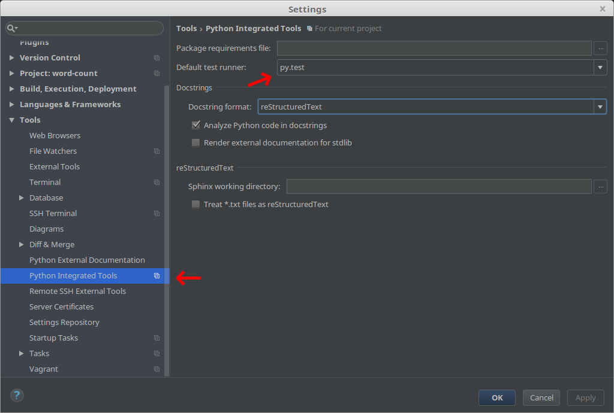
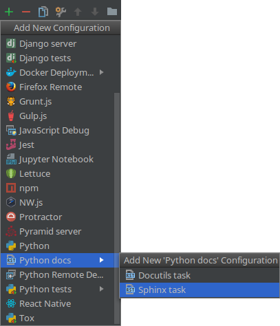
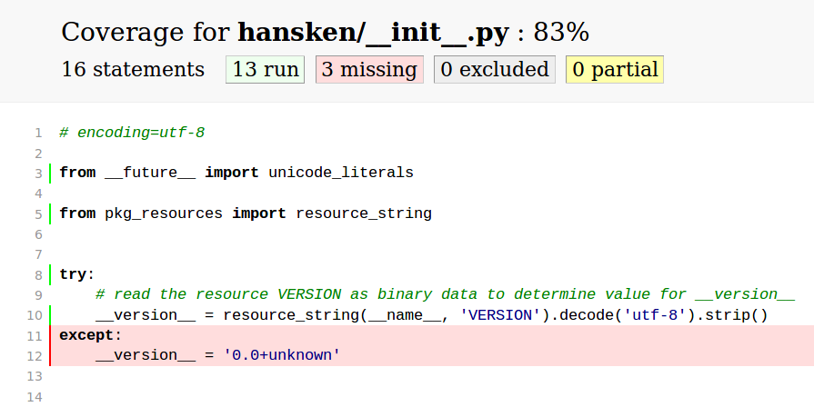

Python alsof het echte software is

1 / 42
Hoezo?!
- FBDA's weapon of choice
- zowel losse scripts als 'libs'
- herbruikbaarheid non-triviaal
- geringe ervaring met tooling
- impulsgroep DUPLO™
2 / 42
Invulling
- typisch los script (doet het!):
wordcount.py - nou nog herbruikbaar…
- spelen met veelgebruikte tooling
pytest,setuptools,sphinx,tox,wheel, …- PyCharm
- disclaimer: dit is een dive, geen deep dive
3 / 42
Not Invented Here™
- github's trending python projects als inspiratie (
keras,requests, …) - project-layout (
test_dingen.pyoftests/test_iets.py, …) - gebruikte tools (
pytestofunittest2, …) - verder: "populaire conventie"
4 / 42
What TODO
virtualenv- unittests met
pytest - packaging met
setuptoolsenwheel - documentatie met
sphinx - automatisering met
tox - eventueel
- 'lint' met
flake8 - test/code coverage met
coverage
- 'lint' met
5 / 42
Requirements
git --versionpython3 --versionpip --version(verwijst naar welke versie van Python?)- eventueel
pip3
- eventueel
pip show pip- PyCharm (community of professional)
6 / 42
Woordjes tellen
- live meeklikken (of kopie-pasta):
https://akaidiot.github.com/word-count/
$ git clone https://github.com/akaIDIOT/word-count.git
$ python3 wordcount.py map/met/tekst
[('de', 123), ('het', 45), ('een', 6)]
- PyCharm
virtualenv
7 / 42
Virtual reality
Alle DUPLO-blokken netjes in de doos:
$ pip install virtualenv $ virtualenv --python python3 pad/naar/env $ source pad/naar/env/activate # *nix $ pad\naar\env\Scripts\activate # windows
8 / 42
Virtual reality: PyCharm

9 / 42
Virtual reality

10 / 42
Unit tests
- een 'unit' is klein
wordcount.pyis niet handig testbaar ☹ (één unit)- eerst fixen of eerst tests maken?
- pragmatisme of test driven development
populaire conventie: test-code in …/tests/
11 / 42
Unit tests: pytest
$ pip install pytest
…/tests/test_wordcount.py:
def test_tokenize(): text = 'De kat krabt de krullen van de trap.' words = tokenize(text) assert 'krullen' in words assert 'trap' in words
12 / 42
Unit tests: PyCharm

Rechts-klik op tests, ▶ Run 'py.test in tests'
13 / 42
Bonus tests
pytest heeft handige helpers, pyhamcrest1 maakt één en ander leesbaarder:
@pytest.mark.parametrize('text, words', [ ('test', ['test']), ('testing\n123', ['testing', '123']), ]) def test_tokenize(text, words): assert_that(tokenize(text), contains_inanyorder(*words))
mock / unittest.mock kan dingen die in de weg zitten (HTTP-requests, database-cursors, …) 'mocken'
-
importeer uit module
hamcrest↩
14 / 42
Unit tests
15 / 42
Packaging
- pakketje wat Python 'snapt'
- Python packages, modules en dependencies
(niet alleen) populaire conventie: …/setup.py
16 / 42
Packaging: setup.py
from setuptools import setup setup( name='wordcount', version='0.0', # see PEP-440 description='Count words, duh', author='Henk de Vries', author_email='henk.de.vries@nfi.minvenj.nl', py_modules=['wordcount'], # single module install_requires=[], # no dependencies )
17 / 42
Packaging: wordcount.tar.gz
$ python setup.py bdist $ ls dist/ wordcount-0.0.linux-x86_64.tar.gz
euh… x86_64? .tar.gz? ☹
18 / 42
Packaging: wordcount.whl
$ pip install wheel $ python setup.py bdist_wheel $ ls dist/ wordcount-0.0-py3-none-any.whl
oeh, py3-none-any, .whl ☺
19 / 42
Packaging: pip install wordcount
- afdeling heeft een PyPI-server (😘 FIG)
- iedereen heeft leesrechten
- schrijfrechten op aanvraag
- configuratie op confluence
$ twine upload --repository dbs dist/*.whl
20 / 42
Packaging
21 / 42
Documentatie: Spinx
- krachtige tool, maar veel TLC nodig…
- geconfigureerd in Python
- genereert documentatie vanaf
index.rst - reStructuredText (☹)
- importeert code, rendert docstrings zoals bijv. readthedocs.org
22 / 42
Documentatie: Sphinx
$ pip install sphinx $ cd …/word-count $ sphinx-quickstart > Root path for the documentation [.]: docs > autodoc: automatically insert docstrings from modules (y/n) [n]: y > Create Makefile? (y/n) [y]: n > Create Windows command file? (y/n) [y]: n
populaire conventie: doc root in …/docs/
23 / 42
Documentatie: conf.py
vies, maar hier nodig…
import os import sys sys.path.insert(0, os.path.abspath('..'))
24 / 42
Documentatie: index.rst
.. toctree:: :maxdepth: 2 :caption: Contents: api
25 / 42
Documentatie: api.rst
API Docs ======== .. automodule:: wordcount :members: :undoc-members:
Niet per se fijn, eventueel in conf.py:
autodoc_default_flags = ['members', 'undoc-members']
Zie Sphinx' autodoc doc voor meer
26 / 42
Documentatie: PyCharm

27 / 42
Documentatie: PyCharm

28 / 42
Documentatie
29 / 42
Automatisering: tox
- soort van
Makefile - één of meerdere 'testenvs'
- maakt zelf virtual envs
- daarna soort van shell script
- vooral handig voor build servers, herhaalbaarheid buiten je eigen bubbel
populaire conventie: …/tox.ini
30 / 42
Automatisering: tox.ini
normaliter buiten de virtualenv voor je project:
$ pip install tox
[testenv] commands = … deps = …
$ tox …
31 / 42
Automatisering: tests en docs
# 'default' testenv [testenv] commands = py.test --strict tests/ deps = pytest # non-default testenv named "docs" [testenv:docs] commands = sphinx-build -b html docs/ dist/docs/ deps = sphinx
32 / 42
Automatisering: Python versies
# global config [tox] envlist = py33, py34, py35, py36 skip_missing_interpreters = True
$ tox … # (times 4)
kan veel meer, zie vooral tox.readthedocs.io
33 / 42
Automatisering
34 / 42
Style-checking
- programma's die zeuren dat je code lelijk™ is (bijv. PyCharm ☺)
- voor Python vrij goed gedefinieerd: PEP-8
- uniform met andere projecten; 'pythonic'
- populaire conventie:
flake8- kent PEP-8 vrij goed
- zeurt per regel
- kan regels overslaan
35 / 42
Style checking: automatisering
[testenv] # any failing command stops and fails env commands = flake8 wordcount.py py.test --strict tests/ # flake8 does plugins, like pep8-naming deps = flake8 flake8-comprehensions pep8-naming pytest
36 / 42
Style checking
37 / 42
Code coverage
- bijhouden welke code wel en niet geraakt is door een test
- geen doel, maar fijn middel om te zien of je test doet wat je bedoelde
- populaire conventie:
coverage
38 / 42
Code coverage: automatisering
[testenv] # let coverage run py.test, generate HTML-report in dist commands = coverage run --branch --source hansken --module py.test --strict tests/ coverage html --dir dist/coverage/ deps = coverage pytest
39 / 42
Code coverage: resultaat

40 / 42
Code coverage: PyCharm (Professional)

41 / 42
Code coverage
42 / 42